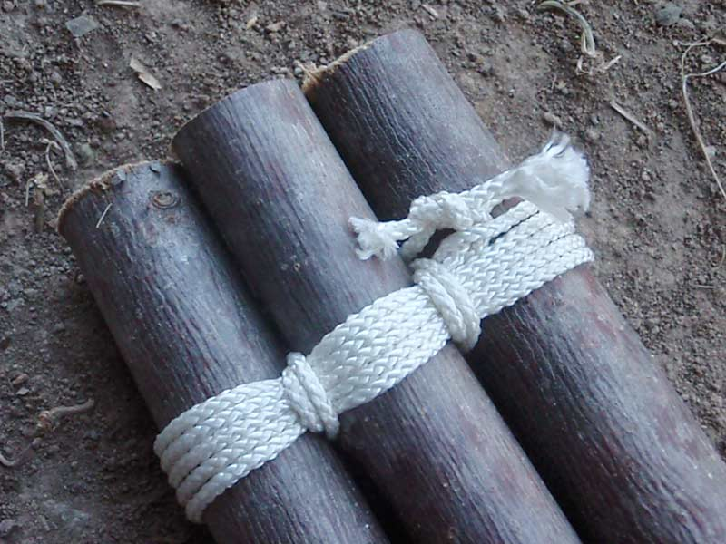

Tripod Lashing
The tripod lashing is commonly used for shelters and to support camp items, like a cooking pot over a fire.
How to tie a tripod lashing:
Start by collecting three poles that of almost identical length and thickness and lay them on the ground side-by-side. Tie a clove hitch to one of the end poles, and then wrap around all of the poles four, five, or six times. Now, wrap line between the poles–twice between each one–working back toward the original knot or hitch you tied. Finish the lashing by tying the tag end of the line to the tag end of your original knot. Spread the legs of the tripod and use it in your camp for something handy.
